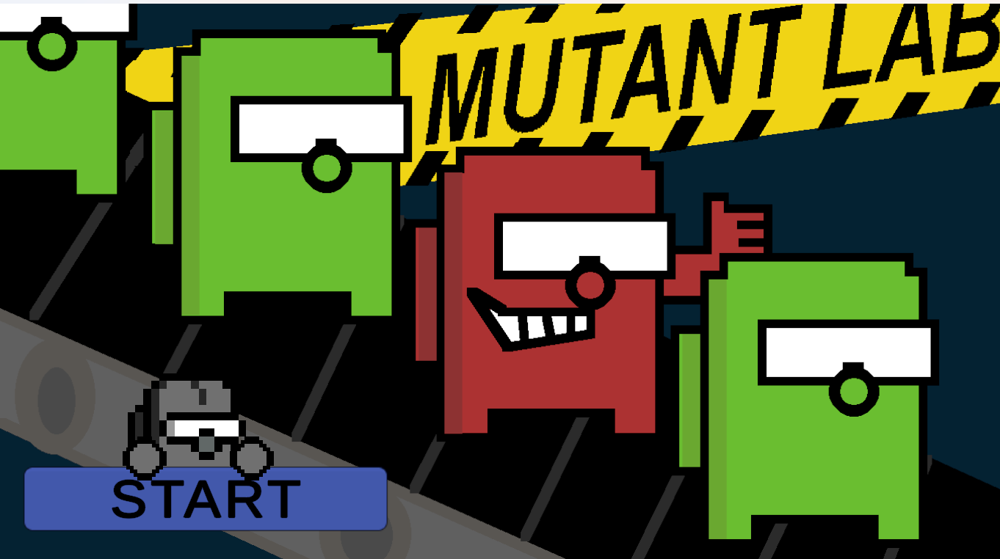

Project link: MutantLab프로젝트 링크: MutantLab

- Designed comprehensive game systems to create balanced and engaging gameplay.균형 있고 몰입감 있는 게임 플레이를 보장하기 위한 종합적인 게임 시스템 설계
- Created pixel artwork to establish the game’s distinctive visual style.게임만의 독창적인 비주얼 스타일을 구축하기 위한 픽셀 아트워크 제작
- Ran MDA (Mechanics–Dynamics–Aesthetics) tests to gather player feedback.플레이어 피드백 수집을 위한 MDA(메커닉·다이내믹·미학) 테스트 진행
- Revised game systems, fixed bugs, and improved gameplay based on player insights.플레이어 인사이트에 기반한 게임 시스템 수정, 버그 수정 및 게임플레이 개선
Genre: #Shooter #Arcade #Memory #Observation장르: #슈터 #아케이드 #기억력 테스트 #관찰력
Game overview:간단한 게임 소개:
Your job is quality assurance at a factory that produces and sells biological macro-organisms.당신의 임무는 생체 매크로 유기체를 생산·판매하는 공장에서 QA(Quality Assurance, 품질 보증)를 수행하는 것입니다.
Sometimes these organisms mutate and become “WEIRD”!때때로 문제의 유기체들이 돌연변이를 일으켜 ‘WEIRD’가 되기도 합니다!
Put them through three experiments to identify abnormal specimens, then eliminate them before they escape the production line and reach customers.이들을 세 번의 실험에 투입해 이상 개체를 식별하고, 생산 라인을 탈출해 고객에게 전달되기 전에 반드시 제거해야 합니다.
Protecting the laboratory’s reputation is your highest priority.연구소의 명성을 지키는 것은 당신의 최우선 과제입니다.